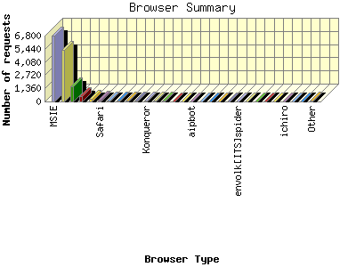

Report generated by Analog 6.0 and Report Magic 2.21
|
Web Server Statistics for "Harish Narayanan (hnarayan) - October 2005" Report generated by Analog 6.0 and Report Magic 2.21 |
The Browser Summary identifies the most popular web browsers used to visit
this site.
Browsers are broken down by recognized categories such as
Netscape Navigator/Communicator, Microsoft Internet Explorer, WebTV, Opera
and the like. Within each category is also a subgroup by version number
such as 'MSIE 5.0' or 'Netscape 4.5'.
This report shows all results. This report is sorted by number of requests.


| Browser Type | Number of requests | Number of bytes transferred | Percentage of the bytes | Percentage of the requests | |
|---|---|---|---|---|---|
| 1. | MSIE | 6,777 | 237.807 MB | 47.64% | 43.62% |
| MSIE/6 | 6,692 | 224.566 MB | 44.99% | 43.07% | |
| MSIE/5 | 77 | 13.116 MB | 2.63% | 0.50% | |
| MSIE/7 | 7 | 82.523 KB | 0.02% | 0.04% | |
| 2. | Firefox | 5,314 | 120.234 MB | 24.09% | 34.20% |
| Firefox/1 | 5,282 | 117.089 MB | 23.46% | 34.00% | |
| Firefox/0 | 30 | 3.121 MB | 0.62% | 0.19% | |
| 3. | Netscape (compatible) | 1,590 | 57.450 MB | 11.51% | 10.23% |
| 4. | msnbot | 566 | 17.149 MB | 3.44% | 3.64% |
| msnbot/1 | 566 | 17.149 MB | 3.44% | 3.64% | |
| 5. | Mozilla | 264 | 25.288 MB | 5.07% | 1.70% |
| Mozilla/1 | 258 | 25.225 MB | 5.05% | 1.66% | |
| 6. | Safari | 173 | 6.442 MB | 1.29% | 1.11% |
| Safari/412 | 133 | 4.991 MB | 1.00% | 0.86% | |
| Safari/312 | 32 | 705.786 KB | 0.14% | 0.21% | |
| Safari/125 | 4 | 335.536 KB | 0.07% | 0.03% | |
| 7. | Opera | 133 | 2.967 MB | 0.59% | 0.86% |
| Opera/8 | 93 | 2.113 MB | 0.42% | 0.60% | |
| Opera/7 | 37 | 850.097 KB | 0.17% | 0.24% | |
| Opera/6 | 3 | 24.163 KB | 0.01% | 0.02% | |
| 8. | Googlebot | 92 | 4.272 MB | 0.86% | 0.59% |
| Googlebot/2 | 92 | 4.272 MB | 0.86% | 0.59% | |
| 9. | Netscape | 90 | 4.458 MB | 0.89% | 0.58% |
| Netscape/7 | 86 | 4.169 MB | 0.83% | 0.55% | |
| Netscape/4 | 4 | 296.077 KB | 0.06% | 0.03% | |
| 10. | Googlebot-Image | 67 | 6.625 MB | 1.33% | 0.43% |
| 11. | Konqueror | 50 | 807.167 KB | 0.16% | 0.32% |
| Konqueror/3 | 50 | 807.167 KB | 0.16% | 0.32% | |
| 12. | Jigsaw | 48 | 361.948 KB | 0.07% | 0.31% |
| Jigsaw/2 | 48 | 361.948 KB | 0.07% | 0.31% | |
| 13. | Wget | 46 | 364.204 KB | 0.07% | 0.30% |
| Wget/1 | 46 | 364.204 KB | 0.07% | 0.30% | |
| 14. | Scooter | 22 | 254.228 KB | 0.05% | 0.14% |
| Scooter/3 | 22 | 254.228 KB | 0.05% | 0.14% | |
| 15. | W3C_Validator | 22 | 198.474 KB | 0.04% | 0.14% |
| W3C_Validator/1 | 22 | 198.474 KB | 0.04% | 0.14% | |
| 16. | aipbot | 21 | 215.197 KB | 0.04% | 0.14% |
| aipbot/1 | 21 | 215.197 KB | 0.04% | 0.14% | |
| 17. | NutchCVS | 19 | 43.540 KB | 0.01% | 0.12% |
| NutchCVS/0 | 19 | 43.540 KB | 0.01% | 0.12% | |
| 18. | webcollage | 19 | 786.301 KB | 0.15% | 0.12% |
| webcollage/1 | 19 | 786.301 KB | 0.15% | 0.12% | |
| 19. | psbot | 15 | 191.489 KB | 0.04% | 0.10% |
| psbot/0 | 15 | 191.489 KB | 0.04% | 0.10% | |
| 20. | Yahoo-MMCrawler | 12 | 106.487 KB | 0.02% | 0.08% |
| 21. | envolk[ITS]spider | 11 | 20.023 KB | 0.00% | 0.07% |
| envolk[ITS]spider/1 | 11 | 20.023 KB | 0.00% | 0.07% | |
| 22. | http: | 11 | 33.832 KB | 0.01% | 0.07% |
| http://www | 11 | 33.832 KB | 0.01% | 0.07% | |
| 23. | Accoona-AI-Agent | 10 | 89.429 KB | 0.02% | 0.06% |
| Accoona-AI-Agent/1 | 10 | 89.429 KB | 0.02% | 0.06% | |
| 24. | DataFountains | 10 | 18.203 KB | 0.00% | 0.06% |
| DataFountains/DMOZ | 10 | 18.203 KB | 0.00% | 0.06% | |
| 25. | Y!OASIS | 9 | 62.386 KB | 0.01% | 0.06% |
| 26. | ichiro | 9 | 62.229 KB | 0.01% | 0.06% |
| ichiro/2 | 9 | 62.229 KB | 0.01% | 0.06% | |
| 27. | DoCoMo | 9 | 76.406 KB | 0.01% | 0.06% |
| DoCoMo/2 | 9 | 76.406 KB | 0.01% | 0.06% | |
| 28. | FAST Enterprise Crawler | 9 | 86.131 KB | 0.02% | 0.06% |
| FAST Enterprise Crawler/6 | 9 | 86.131 KB | 0.02% | 0.06% | |
| 29. | cfetch | 8 | 109.901 KB | 0.02% | 0.05% |
| cfetch/1 | 8 | 109.901 KB | 0.02% | 0.05% | |
| 30. | MPlayer | 8 | 8.942 MB | 1.79% | 0.05% |
| 31. | WordPress | 7 | 65.659 KB | 0.01% | 0.04% |
| WordPress/ | 4 | 35.308 KB | 0.01% | 0.03% | |
| WordPress/1 | 3 | 30.352 KB | 0.01% | 0.02% | |
| 32. | Firebird | 6 | 829.025 KB | 0.16% | 0.04% |
| 33. | ConveraMultiMediaCrawler | 6 | 1.449 MB | 0.29% | 0.04% |
| 34. | ConveraCrawler | 6 | 97.832 KB | 0.02% | 0.04% |
| ConveraCrawler/0 | 6 | 97.832 KB | 0.02% | 0.04% | |
| 35. | Jakarta Commons-HttpClient | 5 | 28.408 KB | 0.01% | 0.03% |
| Jakarta Commons-HttpClient/3 | 5 | 28.408 KB | 0.01% | 0.03% | |
| 36. | Amfibibot | 5 | 87.360 KB | 0.02% | 0.03% |
| Amfibibot/0 | 5 | 87.360 KB | 0.02% | 0.03% | |
| 37. | DA | 4 | 514.935 KB | 0.10% | 0.03% |
| 38. | IlTrovatore-Setaccio | 4 | 156.229 KB | 0.03% | 0.03% |
| IlTrovatore-Setaccio/1 | 4 | 156.229 KB | 0.03% | 0.03% | |
| 39. | ccubee | 4 | 10.104 KB | 0.00% | 0.03% |
| ccubee/3 | 4 | 10.104 KB | 0.00% | 0.03% | |
| 40. | libwww-perl | 4 | 49.439 KB | 0.01% | 0.03% |
| libwww-perl/5 | 4 | 49.439 KB | 0.01% | 0.03% | |
| 41. | findlinks | 4 | 41.163 KB | 0.01% | 0.03% |
| findlinks/1 | 4 | 41.163 KB | 0.01% | 0.03% | |
| 42. | FAST-WebCrawler | 3 | 3.641 KB | 0.00% | 0.02% |
| FAST-WebCrawler/3 | 3 | 3.641 KB | 0.00% | 0.02% | |
| 43. | Lynx | 3 | 64.100 KB | 0.01% | 0.02% |
| Lynx/2 | 3 | 64.100 KB | 0.01% | 0.02% | |
| 44. | NetResearchServer | 3 | 5.461 KB | 0.00% | 0.02% |
| NetResearchServer/3 | 3 | 5.461 KB | 0.00% | 0.02% | |
| 45. | NG | 3 | 76.044 KB | 0.01% | 0.02% |
| NG/2 | 3 | 76.044 KB | 0.01% | 0.02% | |
| 46. | contype | 3 | 81.477 KB | 0.02% | 0.02% |
| 47. | MOT-E398 | 3 | 20.881 KB | 0.00% | 0.02% |
| MOT-E398/0E | 3 | 20.881 KB | 0.00% | 0.02% | |
| 48. | Metaspinner | 3 | 5.461 KB | 0.00% | 0.02% |
| Metaspinner/0 | 3 | 5.461 KB | 0.00% | 0.02% | |
| 49. | Mozdex | 3 | 10.984 KB | 0.00% | 0.02% |
| Mozdex/0 | 3 | 10.984 KB | 0.00% | 0.02% | |
| 50. | Camino | 2 | 13.854 KB | 0.00% | 0.01% |
| Camino/1 | 2 | 13.854 KB | 0.00% | 0.01% | |
| 51. | Mediapartners-Google | 2 | 18.492 KB | 0.00% | 0.01% |
| Mediapartners-Google/2 | 2 | 18.492 KB | 0.00% | 0.01% | |
| 52. | Galeon | 2 | 13.854 KB | 0.00% | 0.01% |
| Galeon/1 | 2 | 13.854 KB | 0.00% | 0.01% | |
| 53. | Gigabot | 2 | 6.402 KB | 0.00% | 0.01% |
| Gigabot/2 | 2 | 6.402 KB | 0.00% | 0.01% | |
| 54. | Sensis Web Crawler (search_comments\at\sensis\dot\com\dot\au) | 1 | 1.832 KB | 0.00% | 0.01% |
| 55. | common::Proxtrans | 1 | 12.822 KB | 0.00% | 0.01% |
| common::Proxtrans/1 | 1 | 12.822 KB | 0.00% | 0.01% | |
| 56. | MOZILLA | 1 | 1.832 KB | 0.00% | 0.01% |
| MOZILLA/5 | 1 | 1.832 KB | 0.00% | 0.01% | |
| 57. | ia_archiver | 1 | 1.820 KB | 0.00% | 0.01% |
| 58. | ELinks | 1 | 10.111 KB | 0.00% | 0.01% |
| ELinks/0 | 1 | 10.111 KB | 0.00% | 0.01% | |
| 59. | updated | 1 | 1.820 KB | 0.00% | 0.01% |
| updated/0 | 1 | 1.820 KB | 0.00% | 0.01% | |
| 60. | Gaisbot | 1 | 1.820 KB | 0.00% | 0.01% |
| Gaisbot/3 | 1 | 1.820 KB | 0.00% | 0.01% | |
| 61. | BDFetch | 1 | 17.218 KB | 0.00% | 0.01% |
| 62. | Twiceler www.cuill.com | 1 | 1.820 KB | 0.00% | 0.01% |
| Twiceler www.cuill.com/robots | 1 | 1.820 KB | 0.00% | 0.01% | |
| 63. | Xenu Link Sleuth 1.2g | 1 | 0.000 B | 0.00% | 0.01% |
| 64. | ia_archiver-web.archive.org | 1 | 60.973 KB | 0.01% | 0.01% |
| 65. | MJ12bot | 1 | 1.832 KB | 0.00% | 0.01% |
| MJ12bot/v1 | 1 | 1.832 KB | 0.00% | 0.01% | |
| 66. | wume_crawler | 1 | 1.832 KB | 0.00% | 0.01% |
| wume_crawler/1 | 1 | 1.832 KB | 0.00% | 0.01% | |
| 67. | Windows-Media-Player | 1 | 12.488 KB | 0.00% | 0.01% |
| 68. | NutchOSU-VLIB | 1 | 1.820 KB | 0.00% | 0.01% |
| NutchOSU-VLIB/0 | 1 | 1.820 KB | 0.00% | 0.01% | |
This report was generated on November 4, 2005 18:28.
Report time frame October 1, 2005 00:05 to October 31, 2005 23:57.
| Web statistics report produced by: | |
 Analog 6.0 Analog 6.0 |  Report Magic 2.21 Report Magic 2.21 |